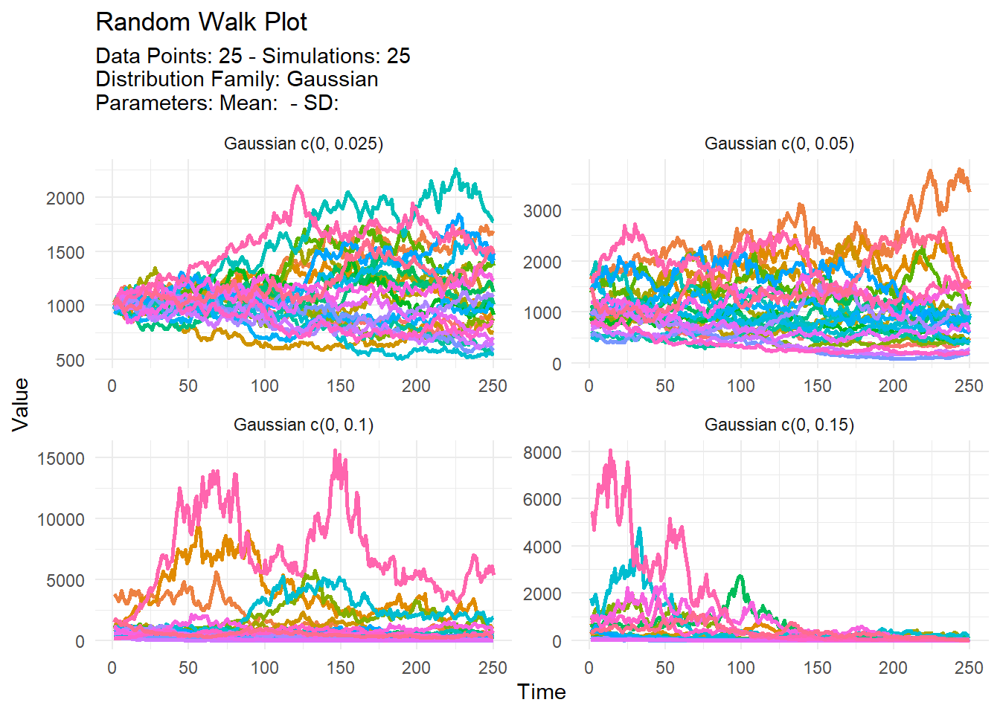

tidy_multi_single_dist(.tidy_dist = NULL, .param_list = list())Introduction
Random walks are a mathematical concept that have found various applications in fields such as economics, biology, and computer science. At a high level, a random walk refers to a process in which a set of objects move in a random direction at each time step. The path that the objects take over time forms a random walk.
One of the main uses of random walks is in modeling the behavior of stock prices. In the stock market, prices can be thought of as performing a random walk because they are influenced by a variety of unpredictable factors such as market trends, news events, and investor sentiment. By modeling stock prices as a random walk, it is possible to make predictions about future price movements and to understand the underlying factors that drive these movements.
Another application of random walks is in studying the movement patterns of animals. For example, biologists have used random walk models to understand the foraging behavior of ants and the migration patterns of animals such as birds and whales.
One interesting aspect of random walks is that they can be generated with different statistical distributions. For example, a random walk could be generated with a standard normal distribution (mean = 0, standard deviation = 1) or with a distribution that has a different mean and standard deviation. By looking at random walks with different distributional parameters, it is possible to understand how the underlying distribution affects the overall shape and pattern of the random walk.
To generate random walks with different distributional parameters, you can use the R package {TidyDensity}. This package provides functions for generating random walks and visualizing them using density plots. With {TidyDensity}, you can easily compare random walks with different mean and standard deviation values to see how these parameters affect the shape of the random walk.
In summary, random walks are a useful tool for modeling the behavior of various systems over time. They are particularly useful for understanding the movement patterns of stock prices and animals, and can be generated with different statistical distributions using the R package {TidyDensity}.
Functions
There are a couple of functions that we are going to use, below you will find them with their full function call and parameter arguments.
.tidy_dist- The type of tidy_ distribution that you want to run. You can only choose one..param_list- This must be a list() object of the parameters that you want to pass through to the TidyDensity tidy_ distribution function.
tidy_random_walk(
.data,
.initial_value = 0,
.sample = FALSE,
.replace = FALSE,
.value_type = "cum_prod"
).data- The data that is being passed from a tidy_ distribution function..initial_value- The default is 0, this can be set to whatever you want..sample- This is a boolean value TRUE/FALSE. The default is FALSE. If set to TRUE then the y value from the tidy_ distribution function is sampled..replace- This is a boolean value TRUE/FALSE. The default is FALSE. If set to TRUE AND .sample is set to TRUE then the replace parameter of the sample function will be set to TRUE..value_type- This can take one of three different values for now. These are the following:- “cum_prod” - This will take the cumprod of y
- “cum_sum” - This will take the cumsum of y
tidy_random_walk_autoplot(
.data,
.line_size = 1,
.geom_rug = FALSE,
.geom_smooth = FALSE,
.interactive = FALSE
).data- The data passed in from a tidy_distribution function like tidy_normal().line_size- The size param ggplot.geom_rug- A Boolean value of TRUE/FALSE, FALSE is the default. TRUE will return the use of ggplot2::geom_rug().geom_smooth- A Boolean value of TRUE/FALSE, FALSE is the default. TRUE will return the use of ggplot2::geom_smooth() The aes parameter of group is set to FALSE. This ensures a single smoothing band returned with SE also set to FALSE. Color is set to ‘black’ and linetype is ‘dashed’..interactive- A Boolean value of TRUE/FALSE, FALSE is the default. TRUE will return an interactive plotly plot.
Example
library(TidyDensity)
library(dplyr)
library(ggplot2)
tidy_multi_single_dist(
.tidy_dist = "tidy_normal",
.param_list = list(
.n = 250,
.mean = 0,
.sd = c(.025, .05, .1, .15),
.num_sims = 25
)
) %>%
tidy_random_walk(.initial_value = 1000, .value_type = "cum_prod") %>%
tidy_random_walk_autoplot() +
facet_wrap(~ dist_name, scales = "free")
Voila!